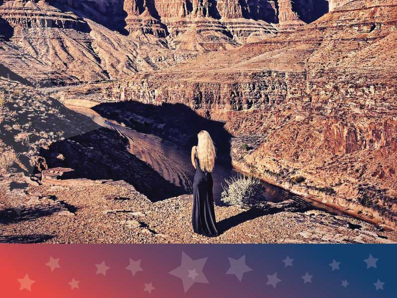

- Главная /
- Celebrities о США /
- Певица Мари Атлас: «Американская мечта – это всё то, что делает тебя живым, счастливым и свободным»
Певица Мари Атлас: «Американская мечта – это всё то, что делает тебя живым, счастливым и свободным»
«ProImmigrationHouse» поговорила с певицей Мари Атлас
о том, чем ее удивил советский Брайтон Бич в Америке, о потрясающей природе и городах, о том, что называла бы «американской мечтой».
Мне посчастливилось побывать в Соединённых Штатах уже дважды. Впервые я посетила Америку 2018-м году, это была поездка в Нью-Йорк. Выйдя из самолета, меня переполнили сильные чувства – человека, прибывшего на другую планету. Именно так мы, рождённые ещё в СССР, воспринимали Соединённые Штаты, — как другую планету. И вот я — на этой «планете». Помню, я в прямом смысле слова ощущала мурашки в животе — мечта сбылась! В 33 года я снова почувствовала себя ребёнком, открывающим для себя большой и удивительный мир. То моё посещение Соединённых Штатов состоялось в преддверии Рождества. Я летела туда с ощущениями и мыслями окунуться в атмосферу фильма «Один дома».
Мне посчастливилось побывать в Соединённых Штатах уже дважды. Впервые я посетила Америку 2018-м году, это была поездка в Нью-Йорк. Выйдя из самолета, меня переполнили сильные чувства – человека, прибывшего на другую планету. Именно так мы, рождённые ещё в СССР, воспринимали Соединённые Штаты, — как другую планету. И вот я — на этой «планете». Помню, я в прямом смысле слова ощущала мурашки в животе — мечта сбылась! В 33 года я снова почувствовала себя ребёнком, открывающим для себя большой и удивительный мир. То моё посещение Соединённых Штатов состоялось в преддверии Рождества. Я летела туда с ощущениями и мыслями окунуться в атмосферу фильма «Один дома».
Про Нью-Йорк и лучшие пельмени на Брайтон Бич
Нью-Йорк — очень красивый, урбанистический, очень многолюдный. Потоки людей и машин, кажется, не прекращаются в этом городе никогда — ни днём, ни ночью. Представьте себе, каждое своё пробуждение в отеле, выглядывая в окно, уже в семь часов утра я видела большие очереди в Starbucks. Нью-йоркцы со стаканчиками кофе уже спешат по делам. И так – каждое утро.
Я поселилась возле знаменитого Центрального Парка – в отеле «Ritz». Хотя, на самом деле, мой самый любимый район в Нью-Йорке – это Сохо. По нему я могу гулять часами: наблюдать дома из красного кирпича и наружными лестницами, «ползущими» как металлический плющ по стенам, от асфальта до самой крыши. Глядя на них, мне вспоминается фильм «Красотка», где в одном из последних кадров Ричард Гир с букетом цветов взбирается по такой же лестнице навстречу к Джулии Робертс.
В Нью-Йорке я не могла отказать себе в любопытстве увидеть Брайтон Бич. Это — особенный колорит, который, пожалуй, не найти уже нигде на территории постсоветского пространства. Своего рода музей под открытым небом, музей наших — советских — восьмидесятых годов. Люди там даже одеваются ровно также как одевались у нас в 1986-м-1988-м годах. Такое, своего рода, «назад в будущее».
Мне показалось, там совсем нет коренных жителей Нью-Йорка. Там нет даже американской полиции. Кругом — россияне и украинцы, — очень много украинской речи, сурджика и русского языка с украинским акцентом. Очень много пельменных. В одну из них я зашла и, хочу признаться, что вкуснее тех пельменей я не ела нигде и никогда в жизни. Брайтон Бич — это даже не Америка, это просто отдельная планета, — «американской Ватикан», государство в государстве. Только если в Ватикане законсервирована история итальянская, то на Брайтон Бич — советская.
Я поселилась возле знаменитого Центрального Парка – в отеле «Ritz». Хотя, на самом деле, мой самый любимый район в Нью-Йорке – это Сохо. По нему я могу гулять часами: наблюдать дома из красного кирпича и наружными лестницами, «ползущими» как металлический плющ по стенам, от асфальта до самой крыши. Глядя на них, мне вспоминается фильм «Красотка», где в одном из последних кадров Ричард Гир с букетом цветов взбирается по такой же лестнице навстречу к Джулии Робертс.
В Нью-Йорке я не могла отказать себе в любопытстве увидеть Брайтон Бич. Это — особенный колорит, который, пожалуй, не найти уже нигде на территории постсоветского пространства. Своего рода музей под открытым небом, музей наших — советских — восьмидесятых годов. Люди там даже одеваются ровно также как одевались у нас в 1986-м-1988-м годах. Такое, своего рода, «назад в будущее».
Мне показалось, там совсем нет коренных жителей Нью-Йорка. Там нет даже американской полиции. Кругом — россияне и украинцы, — очень много украинской речи, сурджика и русского языка с украинским акцентом. Очень много пельменных. В одну из них я зашла и, хочу признаться, что вкуснее тех пельменей я не ела нигде и никогда в жизни. Брайтон Бич — это даже не Америка, это просто отдельная планета, — «американской Ватикан», государство в государстве. Только если в Ватикане законсервирована история итальянская, то на Брайтон Бич — советская.
Про Лос-Анджелес, Лас-Вегас
В 2019-м году я была в Лос-Анджелесе и Лас-Вегасе. LA всегда представлялся мне famous-местом. По факту это — такой «посёлок городского типа»: малоэтажные здания, непринуждённые неспешные люди, не обременённые суетой и рутиной. Они очень отличаются от нью-йоркцев. В Лос-Анджелесе все на спорте, очень натуральны, расслаблены. Этот город я бы даже назвала healthy-Меккой Америки. Самым любимым местом для меня стал район Малибу.
Певица Мари Атлас и Джерард Батлер.
В Лос-Анджелесе мне посчастливилось познакомиться с голливудским актёром Джерардом Батлером. Я летала тогда на свой день рождения, и так получилось, что в моем отеле в тот же вечер в ресторане Батлер тоже праздновал свой день рождения. Он оказался очень галантным и при этом очень простым в общении, интересным собеседником.
А вот, пожалуй, самых настоящих американцев я увидела в Лас-Вегасе. Именно туда на выходные приезжают простые работяги и в прямом смысле слова «полный» средний класс США. Мужчины с животиками смачно потягивают пиво и что-нибудь покрепче, а дамы – с не менее выдающимися формами в обтягивающих своих лучших платьях из атласа, шёлка, сетки и люрекса. Но именно в этом и проявляется тот самый, известный нам по фильмам о средней Америке, её неповторимый колорит. Я даже поиграла там в казино: сначала проиграла, но позже посчастливилось выиграть, и на выигранные деньги я купила себе новые туфли.
В Лас-Вегасе я удивилась «ресторанному братству» у американцев. Пары ужинающих в ресторанах за соседними столиками, абсолютно не тушуясь, знакомятся друг с другом, громко общаются. Все начинают рассказывать друг другу о всех своих жизненных, семейных и карьерных перипетиях. И эта «цепочка говорящих друг с другом столов» превращает в конечном счёте заведение в некий единый клуб отдыхающих единомышленников.
Нельзя, побывав в Лас-Вегасе, не посетить Гранд Каньон. Вертолётная экскурсия над этим чудом Света была великолепной. Этот почти марсианский пейзаж впечатляет в любое время суток и особенно мистичен ночью. В свете закатного солнца Гранд Каньон просто великолепен.
А вот, пожалуй, самых настоящих американцев я увидела в Лас-Вегасе. Именно туда на выходные приезжают простые работяги и в прямом смысле слова «полный» средний класс США. Мужчины с животиками смачно потягивают пиво и что-нибудь покрепче, а дамы – с не менее выдающимися формами в обтягивающих своих лучших платьях из атласа, шёлка, сетки и люрекса. Но именно в этом и проявляется тот самый, известный нам по фильмам о средней Америке, её неповторимый колорит. Я даже поиграла там в казино: сначала проиграла, но позже посчастливилось выиграть, и на выигранные деньги я купила себе новые туфли.
В Лас-Вегасе я удивилась «ресторанному братству» у американцев. Пары ужинающих в ресторанах за соседними столиками, абсолютно не тушуясь, знакомятся друг с другом, громко общаются. Все начинают рассказывать друг другу о всех своих жизненных, семейных и карьерных перипетиях. И эта «цепочка говорящих друг с другом столов» превращает в конечном счёте заведение в некий единый клуб отдыхающих единомышленников.
Нельзя, побывав в Лас-Вегасе, не посетить Гранд Каньон. Вертолётная экскурсия над этим чудом Света была великолепной. Этот почти марсианский пейзаж впечатляет в любое время суток и особенно мистичен ночью. В свете закатного солнца Гранд Каньон просто великолепен.

В будущем я хочу обязательно посетить Пенсильванию, Техас и Майами. Мне интересно увидеть всё широчайшее многообразие природы. Есть будоражащее желание в Майами застать знаменитые ураганы вблизи города.
Американская мечта американцами и нами, россиянами, точно воспринимается по-разному. Нашим думается, что для американцев это — популярность, большие деньги и свобода. Для самих жителей Штатов американская мечта — все же стабильность, расслабленность и неограниченность в действиях. Другими словами – всё то, что делает себя живым, счастливым и свободным.
Американская мечта американцами и нами, россиянами, точно воспринимается по-разному. Нашим думается, что для американцев это — популярность, большие деньги и свобода. Для самих жителей Штатов американская мечта — все же стабильность, расслабленность и неограниченность в действиях. Другими словами – всё то, что делает себя живым, счастливым и свободным.
Колорит настоящей американской жизни
Виды там очень красивые. Природа и климат в тех краях напомнили мне природу средней полосы России — невысокие горы, холмы, леса. Например, в сентябре там было теплее, чем у нас в средней полосе. Говоря о желании попутешествовать по Штатам, я бы хотел проехаться по маленьким городкам и деревушкам. Открыть для себя другую, не нью-йоркскую и не лос-анджелесскую, Америку. Увидеть колорит настоящей американской жизни там, где, возможно, ещё сохранились дух и уклад переселенцев, обживающих этот континент.